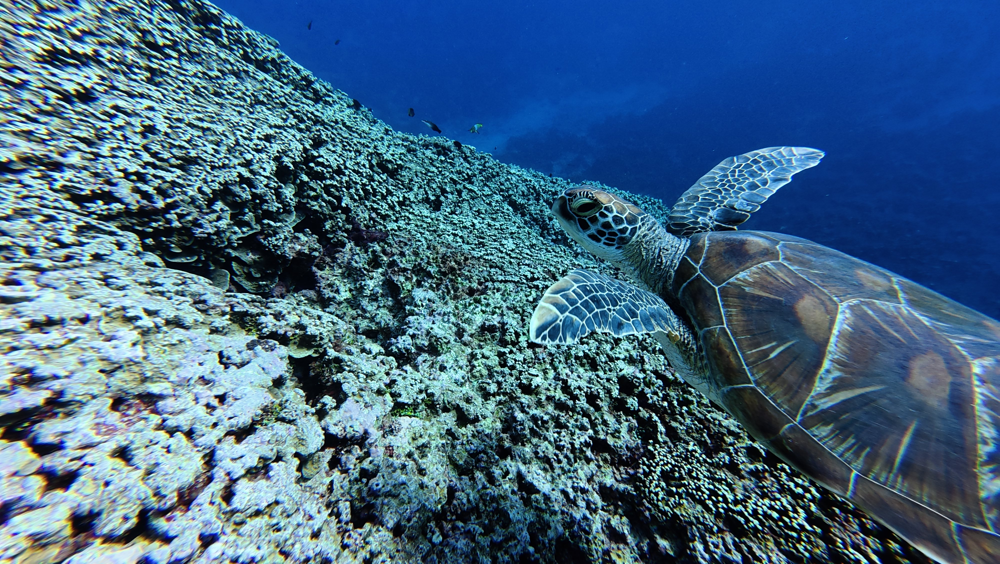

ACCESSIBILITY · TECHNOLOGY · CURIOSITY
더 많은 사람이
편리하고 동등하게
기술을 경험하도록.
삼성전자 MX 사업부에서 Accessibility를 담당하며 Google과 협력하는 개발자, 김현기입니다.
Games 만나보기01 / ABOUT
기술을 보는
또 다른 시선
사용자의 다양한 환경과 경험을 이해하고, 누구나 자연스럽게 사용할 수 있는 제품과 기술을 고민합니다.
직함은 생략합니다. 공개하지 않은 경력과 연락처는 포함하지 않습니다.
02 / EXPERIENCE
접근성을
제품의 언어로.
삼성전자 MX 사업부
Accessibility 담당
Google과 협력하며 더 많은 사람이 기술을 편리하고 동등하게 경험할 수 있는 방법을 고민합니다.
03 / PROJECTS
작은 장벽을
줄이는 일
공개 가능한 프로젝트 상세 정보는 현재 제공되지 않았습니다.
확인되지 않은 프로젝트명이나 성과는 임의로 추가하지 않습니다.
04 / RESEARCH
계속 관찰하고
배우는 중입니다.
사용자 경험과 접근성에 관한 구체적인 연구 자료는 공개하지 않습니다. 이 공간은 앞으로의 기록을 위한 자리입니다.
05 / GAMES
잠깐 쉬어가는
작은 놀이터
벽과 장애물을 피해 먹이를 모아보세요. 방향키, WASD 또는 화면의 버튼으로 움직일 수 있습니다.
점수 0
최고 점수 0
게임 시작 버튼을 눌러 시작하세요.
방향키 / WASD: 이동 · Space: 일시정지

06 / HOBBY
물속에서 만나는
또 다른 세계
취미는 스쿠버 다이빙입니다.
07 / CONTACT
천천히,
꾸준히.
공개 가능한 연락처는 현재 제공되지 않았습니다.